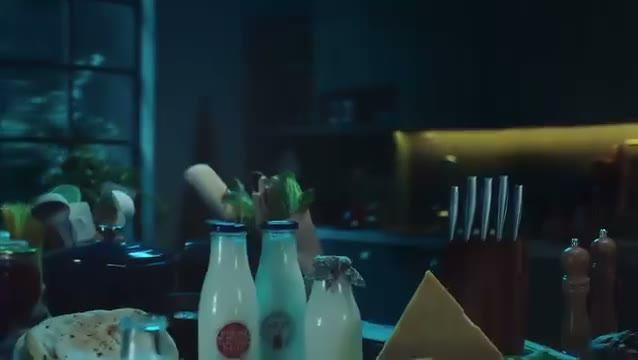
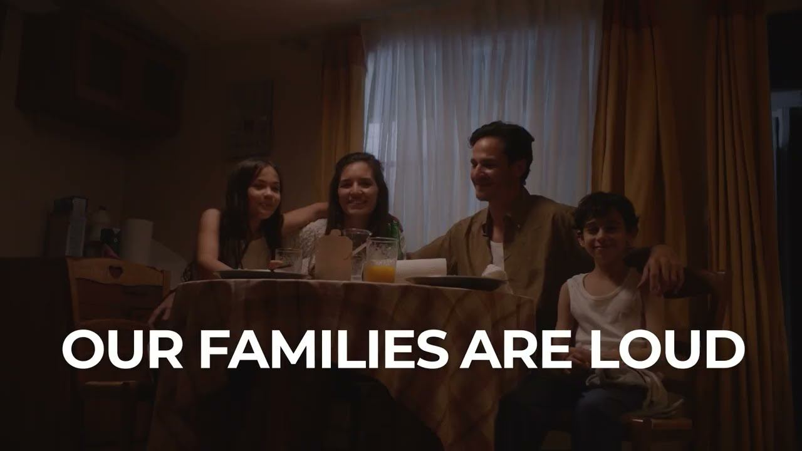
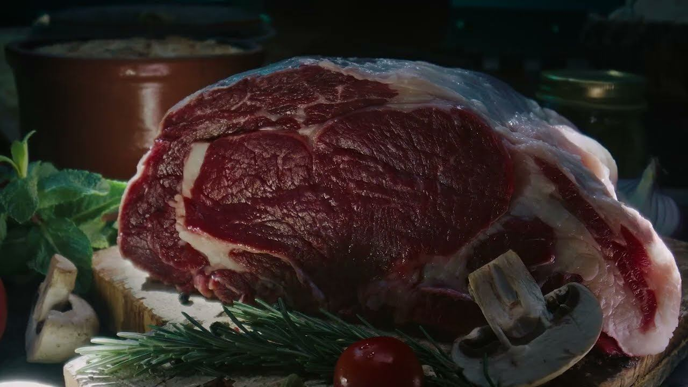
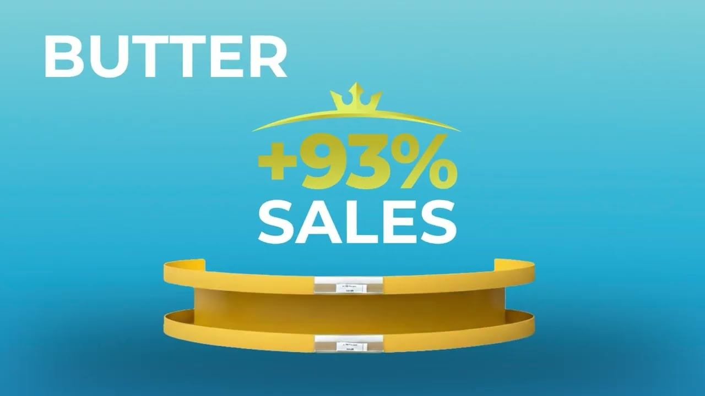

Rotana Dairy (Sakr Group) is an Egyptian dairy brand in a category where everyone shouts the same functional promises. The brand voice we built runs on one idea instead: Rotana simply gets how Egyptian families actually cook, eat and live.
Every queen in her kitchen needs just one thing — something that truly gets her. Something that understands her rhythm, her little secrets, and the magic she brings to every dish. Every woman needs Rotana, because it just gets her.
Two connected campaigns carried the voice. "Rotana Understands You!" — a Ramadan film, digital and content push featured on Ads of the World, with tactical Fawazeer riddles for kunafa, rokak, kahk and biscuits. Then "Naturally Gets Us" — the social campaign honored at the 2026 Webby Awards, built on loud, real Egyptian family life: our families are loud, our kitchens are the center of the house, and our dairy brand gets both.





Client: Rotana Dairy (Sakr Group) · Agency: TAC Universe · Creative Director: Esraa Zakaria · Associate CD / Scriptwriter: Ahmed El-Hareedy · Strategist / Content Director: Fady George · Art Director: Andrew Tarek · Content Manager: Asmaa Swidan · Director: DIBO · Production: P4Concept